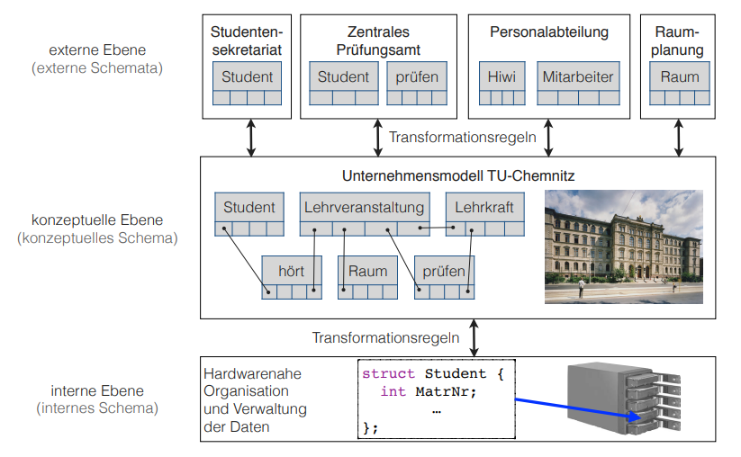

Organization
The "Database Essentials" course does not use the centralized eLearning platform as most other courses do. The lecture slides and exercise materials are instead uploaded here: https://www.tu-chemnitz.de/informatik/DVS/lehre/DBG/.
To get the credit points in this course one has first to do succeed in the prerequisites before he's allowed to participate in the written exam at the end of the semester. The prerequisites consist of homework and more details regarding those will follow when the first task is due.
Why do we need databases?
The starting point is that most applications require data in some form. Data then again has to be organized somehow. How may data be organized? Well for example in a plain file.
Advantages of a plain file:
- easy and fast to create
- can be opened with many programs
- can be shared easily e.g via email or usb
Seems good right? Wrong. Take the following example:
Assume we have two institutions that belong to one organization. The administrations office (AO) and the personnel department (PD).
AO requires the following data:
| ID | 7432420 |
| Name | Doe, John |
| Street | Milkyway 42 |
| City | Metropolis |
| SSN | f01e37d2-e54b |
PD requires the following data:
| Identifier | 7432420 |
| Surname | Doe |
| Forename | John |
| Address | Milkyway 42, Metropolis |
| IBAN | TR2000584U51D8302O7L9Q0823 |
| BIC | PWCUSNC1553 |
Now let's shine a light on the disadvantages of having the above data stored seperately in plain files.
Redundancy:
- the colored entries are stored doubly across our two files (I still have to figure out how to highlight text in my blogging pipeline sorry :D, but you can see that most information is duplicated e.g the ID or name)
One consequence of redundancy is that if the data needs to be changed, the changes have to be done in multiple places, which is cumbersome. And if the changes are not applied correctly inconsistencies will occur!
Reduced Cohesiveness:
- it is not clear if data is logically connected (or the same)
- is "ID" for example always the same as "Identifier"? We don't know!
- how is the data connected? Surname + Forename = Name?
Operate on/with the data:
- it is hard to retrieve statistical information about the data because it is unclear where and how it is stored
- bad performance of requests/queries because the data has first to be searched for in all the files
Big data:
- the data may be too large to be stored on a single filesystem (e.g telecommunication data) → how do I find relevant information fast in those data pools?
Concurrency:
- Person A opens the file from a network drive, loads the content into memory and starts editing it. Meanwhile Person B does the same. Person A finishes and saves back to the file on the network drive and after that Person B saves as well.
- Because Person B did not have the changes from Person A when he started modifying the data, he overwrites those changes when he saves. This is called a lost update.
Privacy:
- not every user is allowed to have full access to the data → management of individual read and write permissions required
- privacy arrangements depend on the surrounding OS → generally there's no option to restrict access to specific information within a file
Dependencies:
- structure of the data is determined by the application program and not by the data itself (e.g convert between Word & Open Office)
- data is bound to the software
Data loss:
- plain files usually only offer periodic backups → data losses that occur while editing a file or between saves are not backuped
Capacity & Performance:
- most filesystems don't offer suited concepts for editing large data pools in a consistent and performant manner
Problem solution
A great deal of the above issues lay in the direct access (via the filesystem) to a inconsistent or badly structured data pool in a sequential manner.
Steps to a solution:
- structure the data
- make direkt access to saved data possible (no sequential run-through)
- provide an abstract layer between the data and the access that coordinates the access, optimizes performance and guarantees integrity (indirect access)
This is where databases come into play. The abstract layer between the access and the data is called database management system (DBMS). The DBMS holds the structural and operational components to organize the da. Via the DBMS the creation, access, managment and deletion of/to data is realised.
The database (DB) is the datapool that is managed by the DBMS. The entity that the DBMS and the DB build together is called database system (DBS). However it is pretty common to refer to this DBS as "database".
It is common that different applications interact with the DBMS to access data from the database. The DBMS ensures that each application/accessor has an individual view and access to the data defined by its authentication and access rights.
Different Views on a DBS
External view (DB User) : Because the task of a DBS is to manage and organize the data for different external applications each external application has its own view of the modeled data.
Conceptual view (DB Designer/Developer) : This is the essential view of the database. It gives a complete overview of the logical structure of all objects and their relationships that are modelled in the data model.
Internal view (DB-Admin) : This is the view of the DBMS on "its" database. Besides the internal data structures, the location, arrangement, encryption and access optimizations can be found here.
As seen above data objects can be described from three different layers of abstraction. The layers build the Three-level architecture (ANSI-SPARC) of the database system. This separation makes sense because of multiple reasons
- DB Users shall not be concerned with the database internals and should just care about the usage of the data, which has to be individual adapted to their use case and priviliges.
- DB Admins shall be able to change the hardware as well as the internal structure of the data without affecting external applications / DB Users.
Three-level architecture
The formal description of the database is called the database schema. The database schema consists of formal descriptions of the components of the three-level architecture.
Usually there is:
- one or more external schemas
- one conceptual schema
- one internal schema
- rules for transforming between the external and the conceptual schema
- rules for transforming between the conceptual and the internal schema
External Schemas
- external schemas describe the aspects of the conceptual objects, their relations and constraints that are important for the correct data usage in their application
- the access to the database is usually restricted in some way(s)
- data from the conceptual view can be represented differently to the external view (e.g additional constraints)
- this functionality is given by the transformation rules that enable the transformation between objects from the conceptual schema to the external schema and vica versa
Conceptual Schema
- contains all information and properties of objects and their relations that play a role in the data management
- defines aspects of correct data managment (e.g constraints)
- is a central reference point for all applications that use the database (external view)
- changes rather infrequently, e.g only when the business model changes as well
- represents an uniform point of documentation
- controlls the data usage/access from an central point
Internal Schema
- describes how and where data is stored, e.g physical location
- allows creation of additional indices for (for example frequently used) attributes → physical data organization
- defines transformation rules and describes the transformation between objects from the internal view to the conceptual view and vica versa
Three-level architecture: 
Data independence
Each higher level of the data architecture has to be immune to changes of the next lower level of the architecture.
Logical data independence = the external schemas don't need to be changed when the conceptual schema is modified
Physical data independence = the conceptual schema doesn't need to be changed when the internal schema is changed
A prerequisite for this is that the changes can be represented via the transformation rules.
Advantages of databases
- data independence
- reduced redundancy because differenct applications may access the same data
- consistency because of the centralized storage and organization
- integrity (correct values) because of improved control mechanisms
- statistic measures are easier to do because the data is modelled in one data model, which allows flexible connections → queries are more efficient because data is easier to find
- multiple usage and concurrent access is managed by the DBMS to prevent e.g lost updates
- security improvements because data access can be controlled easier
- standards compliance (naming conventions, documentation, access)
- scalability and reduced costs because usually only the hardware has to be upgraded if the requirements change and not the technology of the data consuming applications
- increased productivity because the tools given by a DBMS are usually much more powerful than those of a file system
- improved backup capabilities